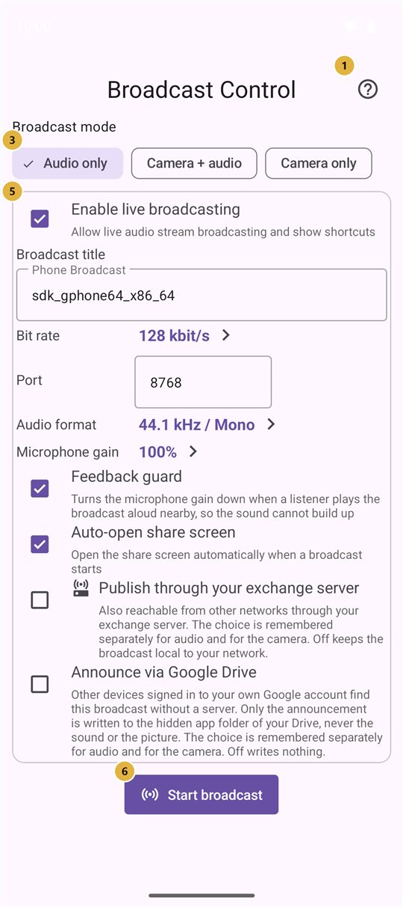
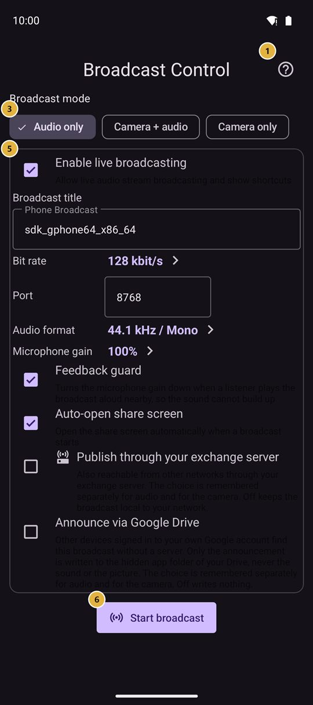

Broadcast Control
What this is for
Turn this phone into a live station: it sends sound, or sound and picture from the camera, to other devices. You choose what to send, start it, and hand out the link or the QR code.


In this order
- Choose what to send in Broadcast mode 3, and the camera 4 if the picture is part of it.
- Check the settings 5 once: the title, the sound quality and whether the broadcast also goes through your exchange server.
- Press Start broadcast 6. The first time, Android asks for the microphone, the camera and notifications.
- Give listeners the QR code or the link 14: Copy Link 15, Export File 16 or Send to 17.
- Watch the listener count 2. Stop Broadcast 12 ends it for everyone.
The elements
The top
1HelpOpens this page.
While you are live, the broadcast goes on with the page open.
- Shortcut
- F1
2Listener countHow many devices are listening.
Counts the devices connected to this broadcast right now. It shows while you are live.
- Undo
- Nothing to undo; the number follows the listeners.
Before you start
3Broadcast modeAudio only, Camera + audio or Camera only.
Audio only sends sound. Camera + audio sends sound and picture. Camera only sends the picture without sound. Changing the mode while you are live is allowed; listeners then reopen the stream by the updated link or QR code.
- Undo
- Choose the mode you had.
4CameraWhich camera to use.
Back, Front or an external camera, whichever your phone has. It shows when the picture is part of the broadcast. If there is no camera, the screen says so.
- Undo
- Choose another camera; you can also switch while live.
5Broadcast settingsOpens the broadcast settings.
Opens the Broadcast page of Settings: the title, the sound quality, the port, the microphone gain and the options for publishing through other places. Back returns here.
- Undo
- Each setting can be put back to what it was.
6Start broadcastBegins the broadcast.
Asks Android for the access it needs, then starts. A notification appears while the broadcast runs, so it can go on when you leave the screen. If the microphone, the camera, the notifications or the network are not available, the screen says what stopped it.
- Undo
- Stop Broadcast ends it.
While you are live
7Camera ON / OFFCamera on or off.
Hides or shows the picture without ending the broadcast.
8Microphone ON / OFFMicrophone on or off.
Shown when sound and picture are sent together. Mutes the sound without ending the broadcast.
9Switch CameraBack or front camera.
Changes the camera while you are live.
10Screen OffLets the screen go dark.
In an audio-only broadcast the screen may turn off while the broadcast keeps running. When the camera is part of the broadcast and the phone cannot keep it running with the screen off, the button is named Blank screen and covers the app with a black cover instead.
- Undo
- Wake the phone with the power button, or press Back to remove the black cover.
11Send to watchSends the broadcast to your watch.
Shown while you are live and a paired watch can be reached. The app tells you whether the watch plays the broadcast at once or has saved it for you to open.
12Stop BroadcastEnds the broadcast.
Listeners lose the stream at once. The notification goes away.
- Undo
- Start broadcast begins a new one.
13Exchange server statusWhich exchange server the broadcast is on, and how it is doing there.
With an exchange server added, every broadcast is announced on it from its start. This line names the server and says whether the broadcast is being announced, is on the server, with the relay through the server running, or stays on your own network because the server could not take it; then a Why won't it connect? button explains what to check. Without a server the line says the broadcast is reachable on this network only, and a tap opens the Exchange server screen to add one.
Handing out the broadcast
14QR code and linkThe QR code and the link of this broadcast.
Another device reads the QR code or opens the link to listen. Tap the code to see it full screen. The link works while you are live.
15Copy LinkCopies the link.
Puts the link on the clipboard so you can paste it into a message.
16Export FileSaves the broadcast to a file.
Writes a small file that another device opens to listen. Choose where to save it.
- Undo
- Delete the file.
17Send toSends the link through another app.
Opens the Android share sheet, so you pick the chat, mail or app that gets the link.
18How to watch thisA guide for your listeners.
Opens a web page in your browser that explains how to watch a broadcast; you can forward it to the people you invite. It needs a network.